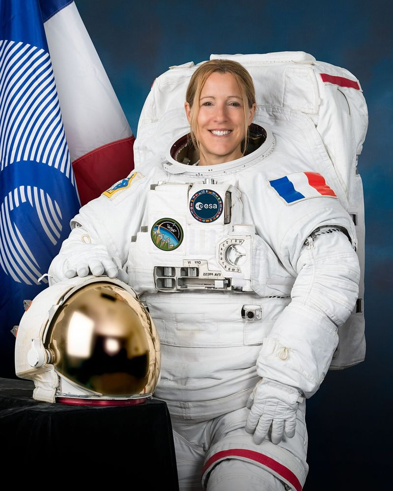

🚀 בוקר טוב חלל
שיא אירופי בחלל: סופי אדנו חזרה הביתה אחרי 237 ימים
8 באוקטובר 2026 ממהדורה 2 · 11 באוקטובר 2026
ב־8 באוקטובר 2026 נחתה במים מול חופי קליפורניה חללית הדרגון ״פרידום״. בתוכה חזרו לכדור הארץ ארבעה אנשי ונשות צוות מתחנת החלל הבין־לאומית, ובהם האסטרונאוטית הצרפתייה סופי אדנו מסוכנות החלל האירופית.
אדנו בילתה בחלל 237 ימים, יותר מ־35 ימים מעל השיא האירופי הקודם לטיסה אחת. היא יצאה לשלוש ״הליכות חלל״ מחוץ לתחנה בתוך 14 ימים, ובתחנה ערכה ניסויים במחקר בריאות, בביולוגיה ובחומרים, ואפילו בדקה הדפסה בתלת־ממד של מתכת.
בדרך הביתה החללית האטה מכ־28,000 קמ״ש לכ־500 קמ״ש, ואז נפתחו מצנחי בלימה, ודקה אחר כך ארבעה מצנחים ראשיים. סירות מהירות הגיעו אליה תוך דקות, ואדנו יצאה מחייכת וחוגגת.
💬 לחשוב ולשוחח: מה הכי הייתם מתגעגעים ומתגעגעות אליו אחרי שמונה חודשים בחלל? ומה הייתם רוצים לעשות ראשון כשתחזרו?
מקורות וקרדיטים
📰 מקורות המידע
- Splashdown confirmed for Sophie Adenot · ESA (8 באוקטובר 2026)
📖 להעמיק ולקרוא עוד
- תחנת החלל הבין-לאומית · ויקיפדיה
- Sophie Adenot · Wikipedia (אנגלית)
תמונה: NASA Johnson Space Center / Helen Arase Vargas · רישיון: Public domain · מקור התמונה
הידיעה נכתבה במילים שלנו על סמך המקורות.